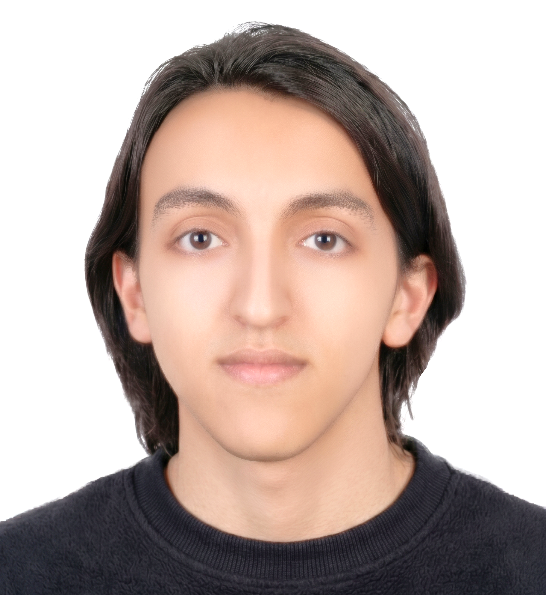

Aymane
Étudiant en Informatique — BUT1
Aymane ANGA
IUT2 de Grenoble
Réalisation d'Applications : conception développement, validation
Baccalauréat Mention TB, Diplôme National du Brevet Mention TB
Actuellement en première année de BUT Informatique, je construis mon parcours autour de la rigueur technique et de l'élégance visuelle. Mon objectif est de fusionner performance et interfaces intuitives.
Parcours Académique
BUT Informatique
IUT2 de Grenoble — Université Grenoble Alpes
Spécialisation axée sur la réalisation d'applications performantes. Approfondissement de l'architecture logicielle, de la programmation orientée objet avancée et de la gestion agile de données complexes.
Grenoble, FranceÉtudes en Informatique / Sciences
EPFL — École Polytechnique Fédérale de Lausanne
Expérience exigeante au sein d'un pôle d'ingénierie Informatique. Développement d'une forte rigueur mathématique, d'une capacité d'abstraction logique poussée et d'une autonomie solide face aux défis informatiques complexes.
Lausanne, SuisseCollège & Lycée Français
Enseignement AEFE
Parcours d'excellence scientifique conclu par l'obtention du Baccalauréat Mention Très Bien. Émergence d'un intérêt profond pour l'algorithmique et la résolution de problèmes structurés.
Casablanca, MarocExpertises
Architecture et Développement
Écosystèmes applicatifs et langages maîtrisésLangues
Profil et aptitudes linguistiquesSciences et Fondations
Rigueur analytique et logiqueMathématiques
Algèbre linéaire, Analyse, Algorithmique discrète
Physique & Matériaux
Mécanique générale, Électronique, Logique des systèmes
Ambitions et Ligne de Mire
Clôture du BUT1
Quasi accompliValider cette première année universitaire au sein du département Informatique avec un dossier académique d'excellence.
- Assimilation des fondamentaux (Algorithmique, SQL, Java, Web)
- Consolidation des moyennes sur les derniers livrables du S2
BUT2 : Spécialisation Parcours A
Prochain FocusPlongée au cœur de l'ingénierie applicative et concrétisation professionnelle via le choix de spécialisation obligatoire.
- Parcours A sélectionné : Réalisation d'Applications : conception, développement, validation
- Exceller dans la conception de patrons logiciels (Design Patterns)
- Décrocher un stage technique à fort impact applicatif
Orientation Stratégique
HorizonMaximiser le niveau de sortie d'études pour intégrer la sphère de l'ingénierie informatique via deux trajectoires d'excellence :
Voie BUT 3
Poursuite du diplôme adossée à une alternance en entreprise.
Voie Grande École
Passerelle sur dossier ou concours pour intégrer un cycle d'Ingénieur.